Graduate Coursework · CMU
Graduate Coursework · CMU
Diabetic retinopathy detection via CNN.
Diabetic retinopathy is a complication of diabetes in which lesions form on the retina, affecting vision and eventually causing blindness. We applied several existing image classification CNN architectures to grading it from retinal photographs, then tried breaking the five-way grading problem into a cascade of binary classifiers to see whether it would perform better.
The problem
Diabetic retinopathy (DR) is a complication resulting from diabetes in which long-term high blood sugar damages the blood vessels on the retina, affecting vision. In its early stages it has only a mild effect, but if allowed to proliferate it can eventually lead to blindness. Anyone with type 1 or type 2 diabetes is at risk.
The long-term damage can be effectively managed, and often prevented, if the disease is caught early. So diabetic patients have regular eye exams where a physician photographs the rear of the eye, called the fundus. Those fundus images are then examined for features like microaneurysms, hemorrhages, hard exudates and soft exudates, each of which shows up as a discolored region.
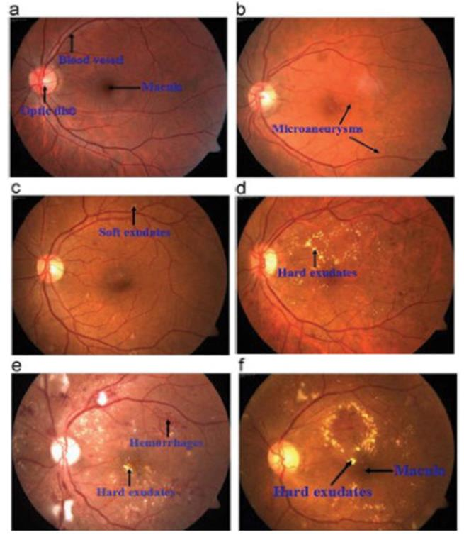
Reading these images takes a trained clinician, and human error is a real concern in image-based diagnosis. A reliable automated grader would cut that error, reduce the need for scarce specialist labor, and potentially catch the disease earlier. That is the case for pointing a CNN at the problem.
My contribution
This was a four-person project with Michael Dermksian, Michael Turski and Eric Rasmussen. I worked mainly on the investigation and testing of established architectures: I expanded the set of well-known CNNs we tried by building working models for each, researched alternative datasets and approaches for overcoming the overfitting we kept running into, and generated a large share of the trained models we evaluated. I also contributed to the presentation and the final write-up.
Data
We relied on two public sources. Messidor-2 is 1,748 right and left fundus images from 874 examinations, shot at very high resolution with consistent equipment and field of view, labeled by retina specialists. Kaggle gave us 88,704 images combining the 2015 Diabetic Retinopathy Detection competition (EyePACS) with the APTOS 2019 Blindness Detection set. The Kaggle images are far less consistent in quality and framing, ranging from 2612 x 1964 pixels down to 221 x 205, but the sheer size of the dataset is attractive, since CNNs generally need a lot of data to train well. We also used a Gaussian-filtered 3,632-image subset of it.
One honest caveat we recorded in the paper: results can only ever be as good as the dataset. The labels are generated by clinicians, so any bias in the human labeling gets inherited by the model.
Preprocessing
The irregularity of the Kaggle data forced us to resize everything to a common 224 x 224 pixels, which also let us initialize from ImageNet weights, and at which the features associated with the different DR levels are still visible to the human eye. We then applied Gaussian filtering and contrast limited adaptive histogram equalization (CLAHE), treating each filtered version as a separate dataset to train on and compare against the unfiltered images. On top of that we augmented aggressively during training, with width and height shifts, rotations, brightness changes, standardization, zoom, and horizontal and vertical flips, to keep the network from overfitting on incidental features like edge position or overall color.
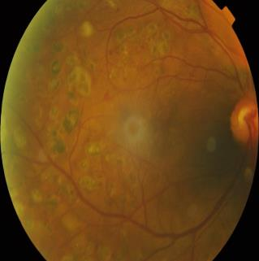
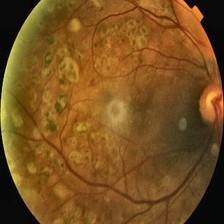
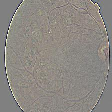
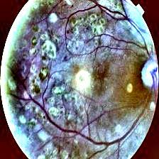
Architectures
AlexNet
As one of the first highly successful CNNs, AlexNet inspired many of the more recent architectures: five convolutional layers and three fully connected layers, ReLU activations, and dropout rather than L2 regularization to control overfitting. Training a generic AlexNet on both Kaggle and Messidor-2, we hit extreme overfitting. Instead of learning the relevant filters and features, it effectively memorized the images, and training accuracy drove to 100% while validation accuracy fell to about 35%.
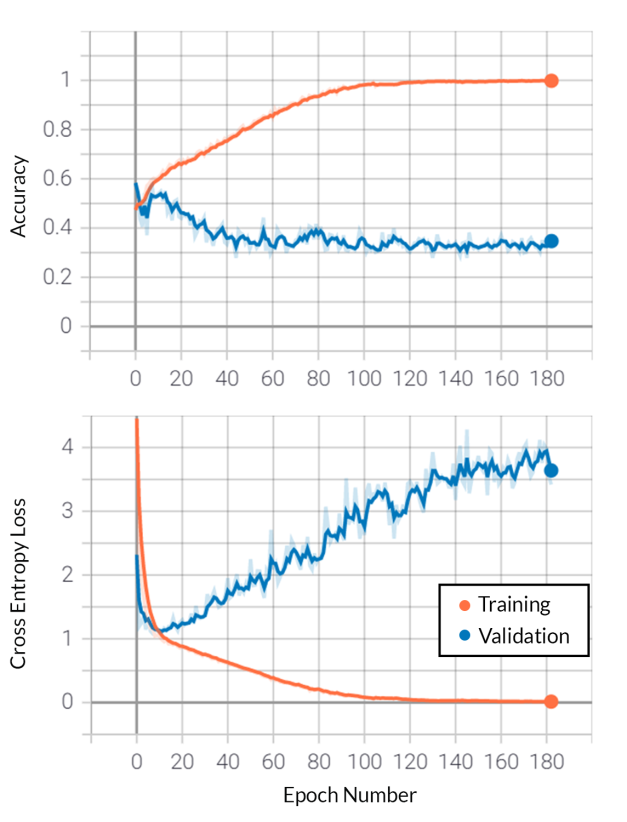
We tried to mitigate this with augmentation, different batch sizes, loss functions, regularization techniques and adjustable learning rates. What we got instead was the other failure mode: because the datasets are mostly healthy images (label 0), the network learned it could maximize accuracy by simply calling nearly everything healthy. The confusion matrix below is what that looks like, at a deceptively respectable 73.5% accuracy.
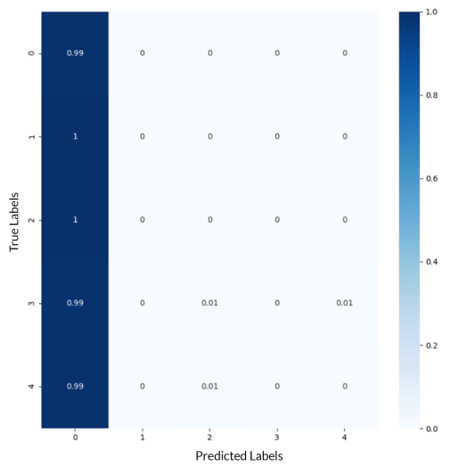
ResNet50
ResNet introduces residual learning through shortcut connections, which perform identity mapping so that extra depth does not add parameters, cutting computation while improving accuracy. We implemented the 50-layer variant. The results were mixed: like AlexNet it often overfit, though with somewhat better validation numbers, reaching about 80% validation accuracy against over 95% training accuracy.
VGG16
VGG, another successor to AlexNet, is where we had the most success. We tried VGG19 without beating it. Using VGG16 initialized with ImageNet weights on the Gaussian-filtered dataset, we reached 95%+ training and 80% validation accuracy on the full 0 to 4 grading.
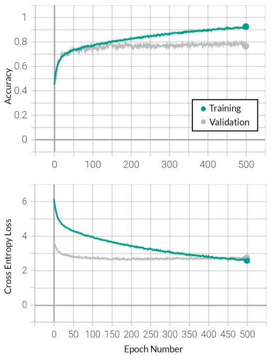
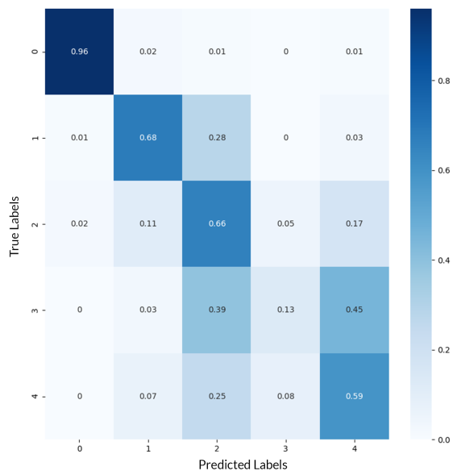
That confusion matrix is the key result of the whole project. The network clearly separates label 0 (healthy) from everything else, with 96.2% precision, 98.6% recall and a 97.45% F1 score on that distinction. What it cannot do is tell classes 1 through 4 apart from each other. Detecting the disease turned out to be a much easier problem than grading it.
Splitting it into binary problems
That observation suggested an approach: rather than asking one network for a five-way answer, decompose the problem into a cascade of binary decisions, each of which the network might handle well.
Step one: healthy versus afflicted
We relabeled classes 1 through 4 as simply "afflicted" and trained VGG16 against class 0, with updated class weights to handle the imbalance, augmentation and L2 regularization, on the Gaussian-filtered Kaggle set. This worked very well: 99.4% training and 98% validation accuracy, with 98.1% precision, 99% recall and a 98.6% F1 score.
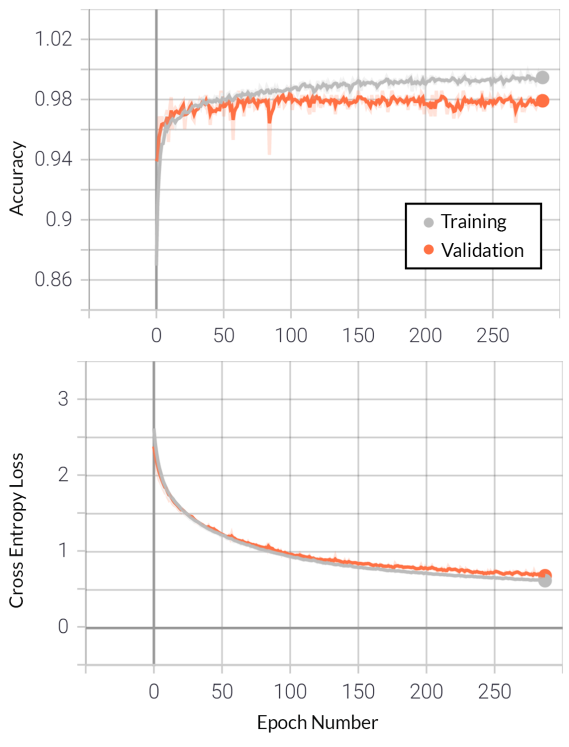
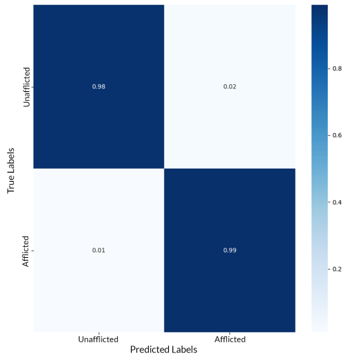
As a screening tool, that is the result that matters. Catching the disease early is what prevents the damage, and a model this reliable at answering "is there any DR here at all" could plausibly do useful triage work.
Step two: grading the afflicted images
With healthy images identified, we excluded them and tried to classify the remaining labels 1 to 4, adding CLAHE alongside the Gaussian filter to bring out features. Accuracy was poor, around 75% training and 65% validation. But the confusion matrix was more informative than the accuracy number.
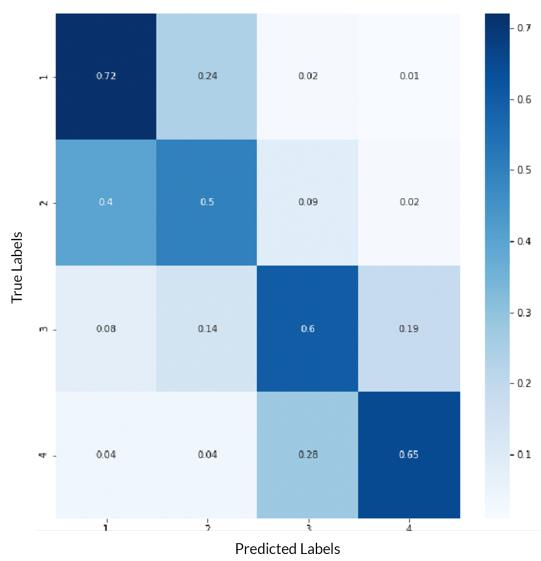
The network could reliably tell whether an image was in the {1, 2} group or the {3, 4} group, and only struggled within each pair. That implies the feature differences between neighboring severities are small and indistinct, while the gap between early and late stage is real. So we split it again along exactly that seam.
Step three: early versus late, then within each
Grouping 1 and 2 as early-stage and 3 and 4 as late-stage, the same VGG setup gave 98.1% training and 80.0% validation accuracy, though precision fell to 61.1% and recall to 66%. We then ran the two final splits: class 1 versus class 2 reached 96% training and 82% validation accuracy, and class 3 versus class 4 reached 97% training but only 57% validation, which is essentially a coin flip.
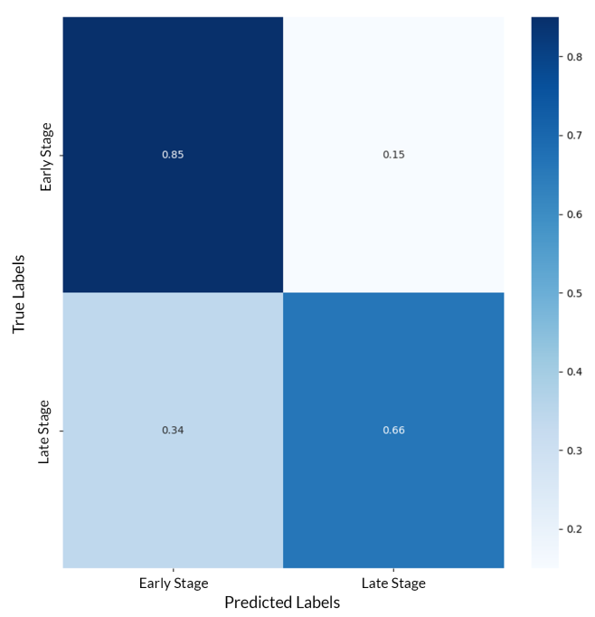
Conclusion
CNNs can detect the presence of diabetic retinopathy with high accuracy. They struggle to grade its severity. Our best five-way result, VGG16 with augmentation and L2 regularization on the Gaussian-filtered Kaggle data, reached 98.1% training and 80.0% validation accuracy, and the confusion matrix showed 96% of healthy images predicted correctly with nearly all the error concentrated between the DR levels.
The binary decomposition did not pay off the way we hoped. It made healthy-versus-afflicted excellent, but subdividing further did not meaningfully beat one-shot categorical classification. We were time-constrained and did little tuning on those sub-models, and properly measuring the gain would need cross-validation studies across the combinations, so this is a preliminary result rather than a verdict.
The more interesting takeaway is about the problem itself: the presence of DR is not nearly as subtle a signal as the variation between its levels. Architectures like VGG16 are built to separate thousands of vastly different image classes. Grading retinopathy asks the opposite question, distinguishing near-identical images by a small difference in the count or character of a few small lesions, and we came to believe a network designed for that kind of fine-grained discrimination would do better than a general-purpose classifier.